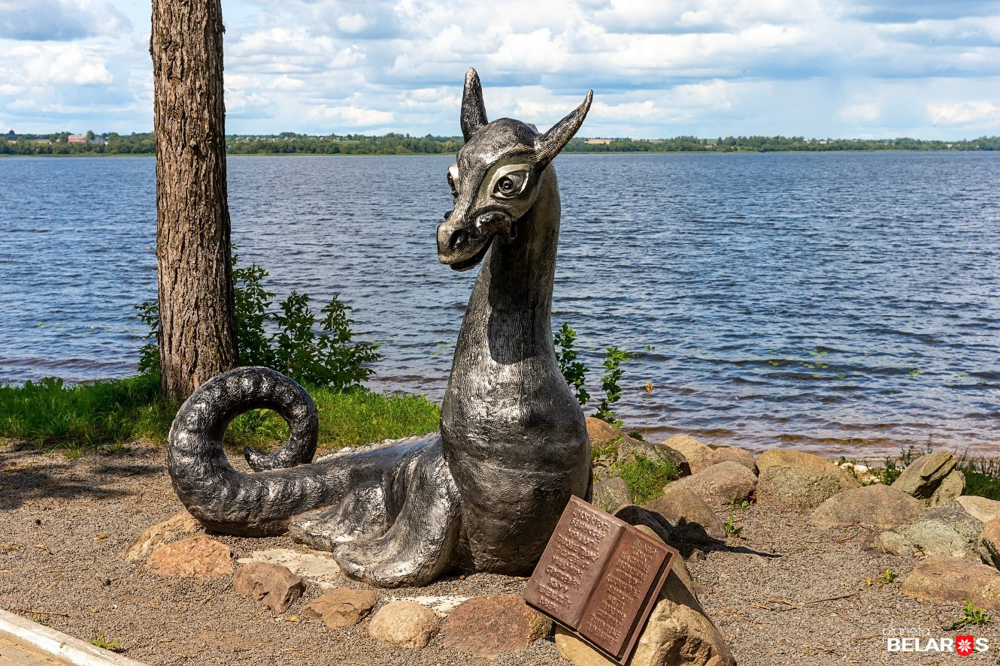

дух, живущий под печкой
Цмок – особая фигура в белорусской мифологии. Его образ многогранен: он и управитель водной стихии, и распределитель равновесия между земной и небесной водой. Считается, что его смерть способна вызвать стихийное бедствие, а жизнь – поддерживать гармонию природы. Но кто он – дракон, змей или нечто иное?
– Это, безусловно, мифологический персонаж нашего фольклора. В реальности каких-то прямых свидетельств его существования нет. Но весь вопрос в том, что или кто мог скрываться за этим образом. Например, есть упоминания, что в XIX веке в районе Татарских болот в Минске, где сейчас находится Комаровский рынок, видели каких-то странных ящеров или ящериц. Одну из них якобы поймали, вскрыли, а чучело долгое время хранилось в одном из кабинетов. Сначала я думал, что это шутка или розыгрыш, но потом нашел подтверждение в книге XIX века, написанной уважаемым археологом. Это заставляет задуматься: может, и за Цмоком стоит что-то реальное? – говорит руководитель проекта "Уфоком" Илья Бутов. Облик Цмока в народных представлениях не имеет четких очертаний. По словам Ильи Бутова, нет единой типологии или единого видения этого персонажа. В старинных книгах и рисунках – это собирательный образ дракона, без особых уникальных черт. Возможно, местный колорит и присутствовал, но выделить его сложно. Иконопись и стиль каждого века добавляли свои детали, но в целом это был типичный дракон – то ли змей, то ли ящер. А вот как описывал Цмока писатель Владимир Короткевич в романе "Хрыстос прызямліўся ў Гародні": "Выглядам той цмок быў, як звер фока (цюлень), такі самы льсняны, у складках, толькі без поўсці. І шэры, як фока. Але даўжэй за яго куды. [...] Тулава мелі тыя цмокі шырокае і трохі пляскатае, і мелі яны плаўнікі – не такія, як у рыбы, а такія таксама, як у фокі, таўстамясыя, шырокія, але не дужа доўгія. Шыю мелі, па тулаву, дык тонкую і надта доўгую. А на шыі сядзела галава, адначасова падобная і на галаву змяі і на галаву лані. І, дальбог, смяялася тая галава. [...] Вочы вялізныя, як сподкі, каламутна-сінія ў зелень, ашклянелыя. І страшна было глядзець у тыя вочы, і мурашкі па спіне, нібы Евінага змія ўбачыў, і непамысна неяк, і нібы ў чымсьці вінаваты".
– Есть красивая версия, что Цмок – это радуга. В народном сознании она могла восприниматься как змей, который пьет воду ("смокча" по-белорусски) из озера и переносит ее на небо. Другие гипотезы уходят еще глубже: возможно, легенды о Цмоке связаны с метеоритами. Пролет болида, яркий и красочный, мог породить миф о Цмоке, как падающего дракона, – отмечает Илья Бутов. – Скорее всего, это результат слияния белорусской культуры с западноевропейской. Борьба рыцаря с драконом ради прекрасной принцессы – знакомый и распространенный сюжет. Цмок, вероятно, имеет что-то общее с этими драконами. Но если говорить о реальности, то гигантские ящеры в Беларуси не существовали. Наш климат – холодные зимы и ледниковые периоды – не позволил бы рептилиям вроде Цмока выжить. У нас в Беларуси водятся только две ящерицы – живородящая и прыткая, и те вырастают максимум до 15-20 см, – говорит Павел Велигуров.